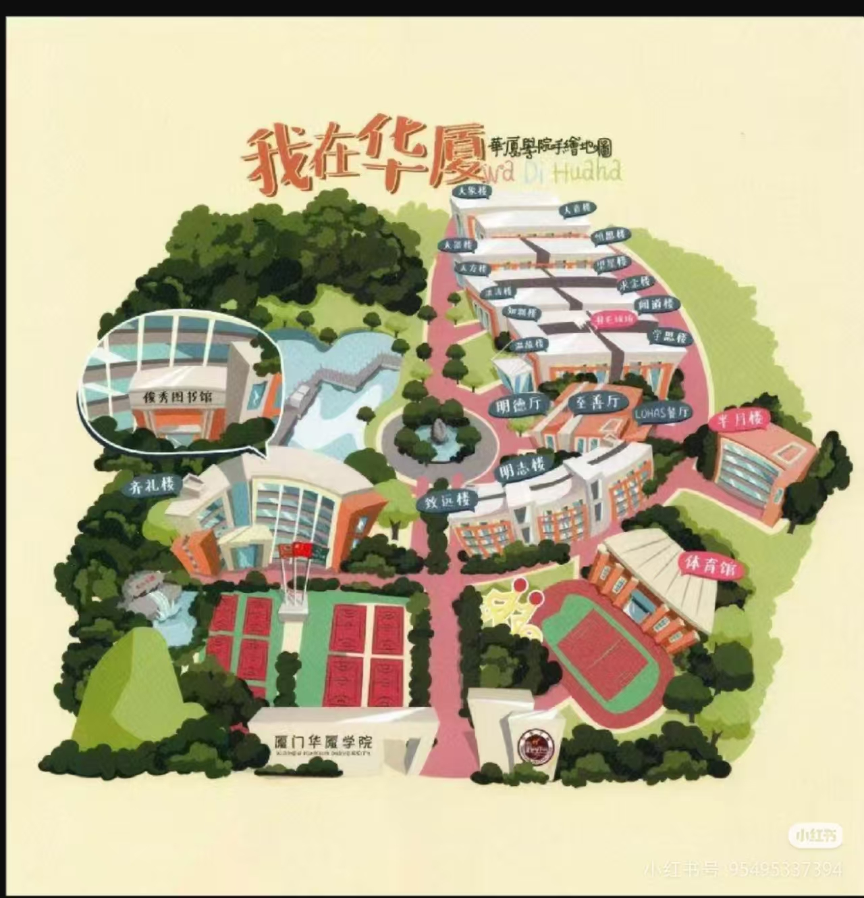
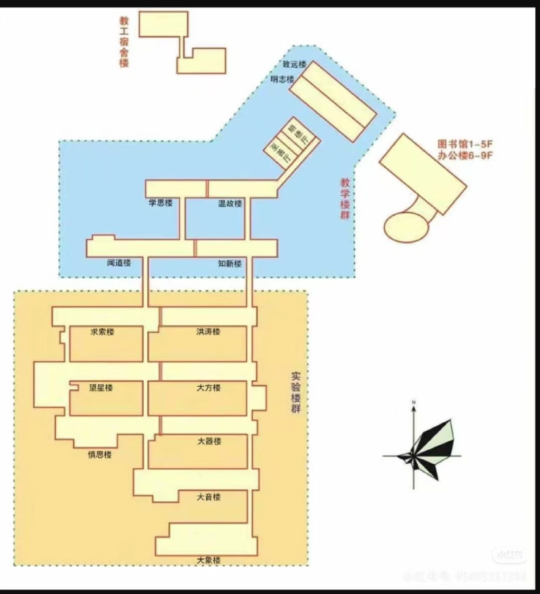

| 位置 | 地点 | 说明 |
|---|---|---|
| 📦 快递点 | 校门口菜鸟驿站 | 所有快递统一送到这里，凭取件码领取。开学期间快递爆仓，建议错峰取件。 |
| 🏪 超市 | 二食堂旁边 | 日用品、零食、文具都有，价格比外面稍贵。建议大件日用品提前网购寄到学校。 |
| 📚 图书馆 | 校园中心 | 刷校园卡进入，有自习室、电子阅览室。考试周一座难求，早上8点排队。WiFi比宿舍好一点。 |
| 🏦 ATM | 一食堂门口 | 工商银行ATM（2台），存取款一体。建议手机支付为主，现金少带。 |
| 🏥 校医院 | 操场旁边 | 小病可以看，拿药便宜。大病建议去市医院。 |
| 🏃 操场 | 宿舍区后方 | 400米标准跑道+篮球场+网球场。晚上跑步的人很多。 |
| 🍱 外卖柜 | 校门口两侧 | 外卖不能进校，统一放校门口外卖柜，扫码取餐。 |
| 🛒 打印店 | 一食堂楼下 | 期末打印论文报告、复印资料。黑白1毛/张，彩色5毛/张。 |
很多大学都有强制的"校园跑"任务（每学期跑几十公里计入体育成绩），但厦门华厦学院没有校园跑要求！不需要下载运动APP打卡，不用担心体育挂科，这对不爱跑步的同学来说简直是天堂 😂

▲ 华厦学院无校园跑 · 不用强制跑步打卡

▲ 无校园跑就是爽 · 体育不靠跑步凑分
| 需求 | 去哪 | 怎么去 |
|---|---|---|
| 大超市 | 万达广场（集美店） | 校门口公交，约15分钟 |
| 看电影 | 万达影城 | 同上，学生票30元起 |
| 火锅/聚餐 | 学校后门美食街 | 步行5分钟，海底捞在万达 |
| 医院 | 厦门市第二医院 | 打车约10分钟 |
| 办银行卡 | 学校旁边工商银行 | 步行8分钟 |
1. 到校 → 先去宿舍放行李（别拎着箱子满校园跑）
2. 去报到点登记、领校园卡、办入住
3. 去超市买日用品（或提前网购寄到菜鸟驿站）
4. 去食堂吃饭（当天家长免费）
5. 下午逛校园熟悉环境
6. 记得办一张流量卡！（校园网真的太慢了）😉